收录于合集
以下文章来源于民智国际研究院 ，作者民智国际研究院
 民智国际研究院 .
民智国际研究院 .
为您解读国际风云

自2017年以来，中美关系发生了重大变化。在战略定位上，美国《国家安全战略报告》等权威文件明确把中国界定为主要“战略对手”和“竞争者”。
在实际政策中，尤其是特朗普上台以来，美国在经贸、科技等领域对中国进行了全面施压，并积极寻求与中国在经济、人文、教育等领域的脱钩。
可以说，中美关系已经发生了质变。在华盛顿，主张对华强硬的声音似乎已经成为主流，且有不断扩大的势头。
面对这样的现实，我们除了要做好准备之外，更需要加深对美国的认识和理解，在中美关系剧烈变动这一特殊时期，防止误判和两国关系继续恶化。
而在美国政治中，除了白宫与国会，还有一类举足轻重的行为体——美国50州州长们。由于美国的联邦体制，州长可以不听白宫的调令，且州对自身的地方政府都实行单一制，州政府可以改变甚至取消城市、县、学区等地方政府。
虽然美国宪法规定，联邦政府对外代表国家主权。但各联邦成员也在联邦宪法允许的范围内享有一定的外交独立性，可以与其他外交主体签订一些协议，部分联邦成员单位也可以以联邦成员身份参与各个国际组织。
因此，在华盛顿对华态度总体趋向强硬的情况下，各州的态度至关重要。为探讨这一问题，民智国际研究院同清华大学全球化研究中心启动了“美国对华态度全景”研究，此篇为系列报告的第一篇——州长篇。
通过梳理美国50州州长的基本信息及所在州经济结构（包括性别、年龄、任职经历、党派、对华态度，以及州GDP、贸易总值、对华贸易结构等），并分析上述因素与其对华态度的相关性，我们得出了如下结论：
（*本部分数据来源于美国各政府官网，官员对华态度数据来源于各大主流媒体。）
1
整体而言，美国各州州长并不存在统一的对华态度，其对华态度也没有表现出转为强硬的趋势。
在50位州长中，有17位州长对华友好，14位州长对华态度模糊，6位州长对华强硬，另有14位州长未有明显的、公开的对华表态。而且，6位持对华强硬态度的州长关心的议题也主要是人权等议题，较少涉及经贸等问题。
2
美国各州州长对华态度不受党派明显的影响。例如，在17位持对华友好态度的州长中，共和党人有11人，民主党人有6人。
在27位共和党人州长中，对华友好的有11人，占比40.7%，对华强硬的有5人，占比18.5%，对华模糊的有8人，占比29.6%，无法判断的有3人，占比11.1%。
在22位民主党人州长中，对华友好的有6人，占比27.2%，对华强硬的有1人，占比4.5%，对华模糊的有6人，占比27.2%，无法判断的有9人，占比40.9%。
3
美国各州州长对华态度与其任期时间长短存在一定的相关性。
例如，即将任满的11位州长及5位面临竞选压力的州长，都未有明确的反华态度，并以模糊或者不表态为主。
但是，可能是出于下一步政治生涯的考虑，这些州长也未表现出明确的对华友好态度。在这16位州长中，仅有5位对华表示友好。
4
美国各州州长对华态度同对华贸易之间存在一定的联系。
对华态度友好的17位州长，其所在州GDP排名、贸易总值排名、对华贸易总值排名集中分布于中等及末等。
对华态度强硬的6位州长，其所在州GDP排名、贸易总值排名、对华贸易总值排名，出怀俄明州以外，皆排名靠前。
对华态度模糊的14位州长，其所在州暂无明显规律可循。
5
从地区分布来看，美国各州州长对华态度呈现出一定的规律，这应与其州的经济结构和产业发展政策有关。
对华友好的17位州长，其所在州集中于美国新英格兰地区、中南部、以美国山地地区。
对华强硬的6位州长，其所在州除纽约州和怀俄明州意外，其余4州皆位于美国东南部。
对华模糊的14位州长，其所在州长地理位置无集中。

**一、美国联邦体制
**
美国是联邦制国家，除联邦政府外，全国有50个州，1个哥伦比亚特区，3042个县，约81900个市、镇和学区。
联邦制是美国的基本国家制度，核心是联邦和州之间的平行关系，是在一个国家内部法律上的相互基本独立，互不隶属。
（*楚树龙、董建森：《美国联邦制度的理论与实践》，《国际关系学院学报》，2012年第2期。）
美国宪法第十修正案规定，所有没有明确授予联邦政府的权力，都“由各州保留”，对总统和各州州长的权力进行了明确的划分。
因此，美国总统和州长之间并不存在上下级关系，宪法禁止总统干涉各州州长的事务，州长也不需要为联邦政府的事情操心，他们的职责都是对自己的选民负责。
根据美国法律，各州是主权实体，虽然无权脱离联邦也无外交权，但是各联邦成员也在联邦宪法允许的范围内享有一定的外交独立性，可以与其他外交主体签订一些协议，部分联邦成员单位也可以以联邦成员身份参与各个国际组织。
而且，州内事务的主导权完全在各州政府手中，其中就包括商业、金融等与贸易战息息相关的领域。
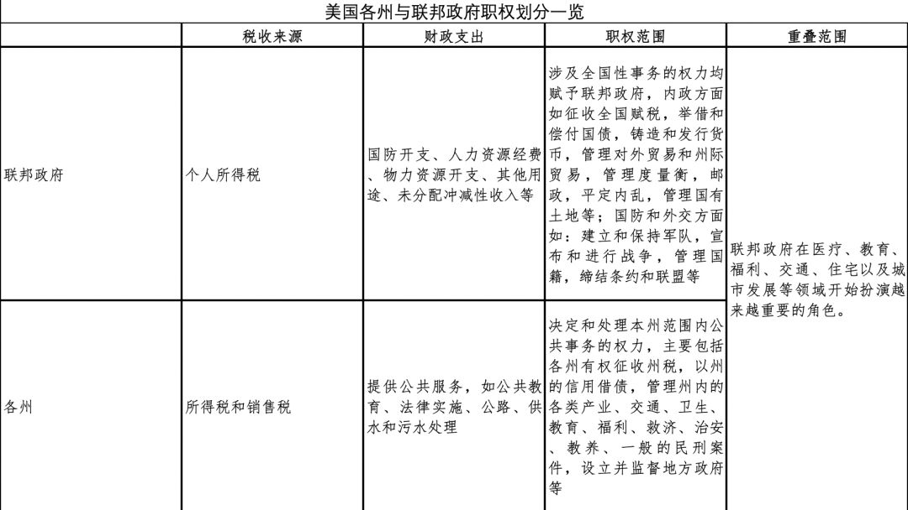
**二、各州经济概况
**
美国下辖50个州、五个自治领土及外岛、以及一个华盛顿哥伦比亚特区。
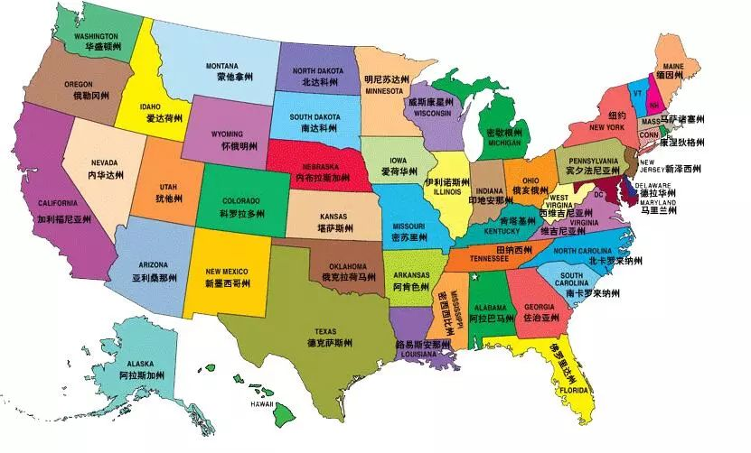
本调查针对的是拥有“州地位”的50个州，而华盛顿哥伦比亚特区实际上是由美国国会直接管辖的联邦地区，因此不属于美国的任何州，也不在此次调查范围内。
本部分所有涉及州的经济数据，皆来源于美国官方人口统计局及美国劳工部劳工统计局，数据时间除特殊标明以外，皆为2018年全年数据，图表数据单位除特殊标明外，皆为百万现值美元。数据检索时间为：2019年6月10日。
01
各州GDP
美国50州GDP数值区间为337亿美元（佛蒙特州）至2.97万亿美元（加州）。GDP平均值为4049亿美元，中位数为2345亿美元，各州GDP总量差异较大。
排名第1的加州，其GDP总量是排名第5的伊利诺伊州的3.4倍，是排名第11的北卡罗来纳州的5.2倍。
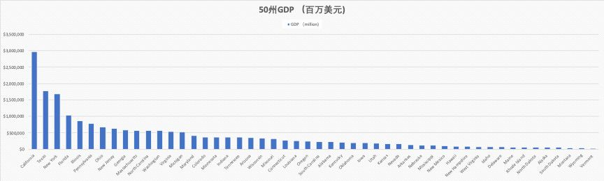
GDP总量排名前5的州分别是：加利福利亚州，得克萨斯州，纽约州，佛罗里达州，以及伊利诺伊州。
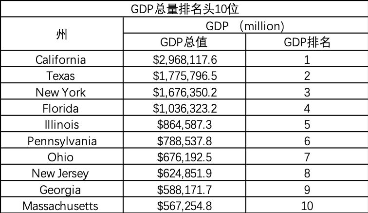
GDP总量排名最末的州分别是：佛蒙特州，怀俄明州，蒙大拿州，南达科他州，以及阿拉斯加州。
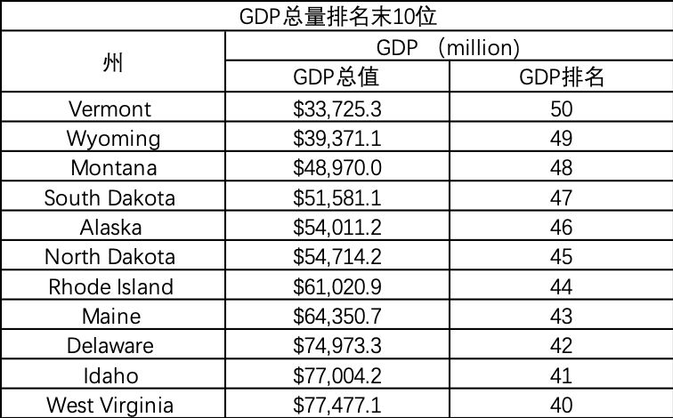
02
各州贸易量
贸易而言，50州贸易值从36亿美元到3016亿美元不等，平均为473亿美元，中位数为280亿美元，州与州之间差异较大，分化两极，整体情况与GDP总量类似。
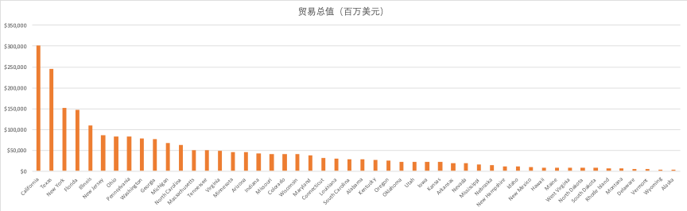
贸易量排名前5的州分别是：加利福利亚州，得克萨斯州，纽约州，佛罗里达州，以及伊利诺伊州。
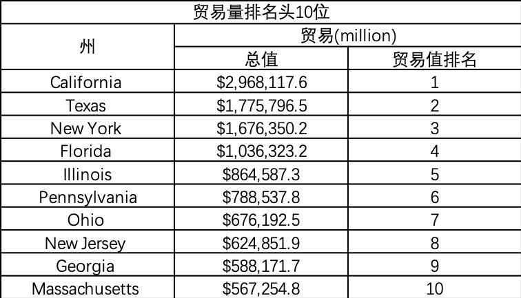
贸易量排名最末的5个州分别是：阿拉斯加州，怀俄明州，佛蒙特州，德拉华州，以及蒙大拿州。
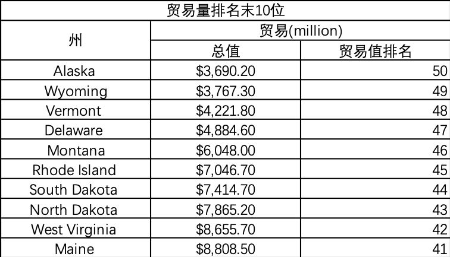
换言之，各州贸易量与其经济规模将存在正相关，即经济规模大的州，其贸易规模也比较大，反之亦然。
03
各州贸易量占比
以贸易总值占GDP比重来看，美国50个州的贸易GDP占比区间从6.52%至14.88%不等，平均占比11.82%，中位数为12.24%。整体而言，除了德拉华及阿拉斯加州，美国各州的贸易值占比差异较小。
但按贸易值占GDP的比值排名，在排名末等的十个州中不乏纽约，加州等经济大洲，这些州贸易量大，但因其本身州经济发达，支柱产业多样，所以贸易值占比相对较低，即对贸易依赖较低。而反过来，一些贸易总值较小的州，因其经济规模也较小，所以贸易值占比相对较高。
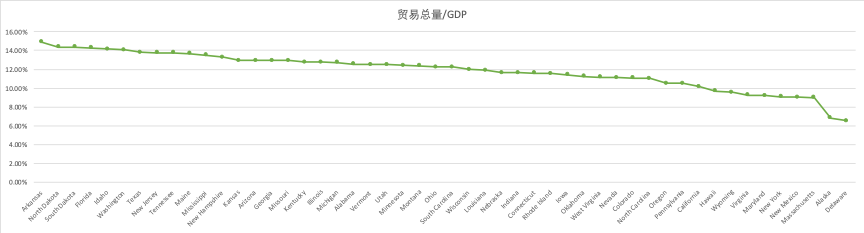
按贸易值占GDP 比值排名，占比最高的5个州及其贸易总值排名为：阿肯色州（33），北达科他州（43），南达科他州（44），佛罗里达州（4），爱达华州（38）。
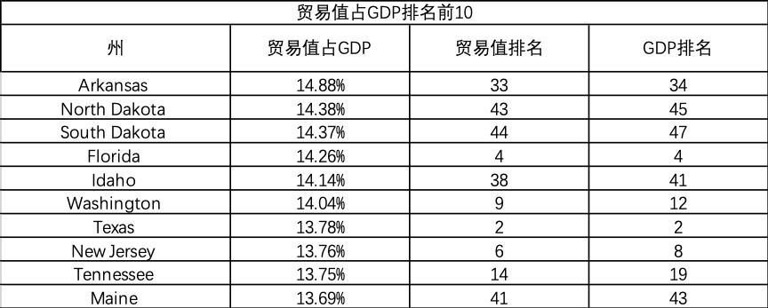
占比最低的5个州及其贸易总值排名为：德拉华州（47），阿拉斯加（50），马塞诸塞州（13），新墨西哥州（39），以及纽约州（3）。
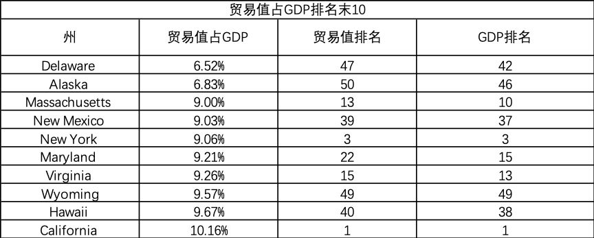
04
对华贸易
以进出口两项数据为基准，50个州与华贸易量区间在2亿美元到1775亿美元之间，平均数为131亿美元，中位数为48亿美元，各州差距较大。
按对华贸易量排名，第41名的罗德岛，其对华贸易量仅为第10名俄亥俄州的6.7%。
但不可否认的，对华贸易总值与每个州的经济体量大小密切相关。排名最末的十州，其贸易总量也较低，其GDP排名也相对靠后，反之亦然。
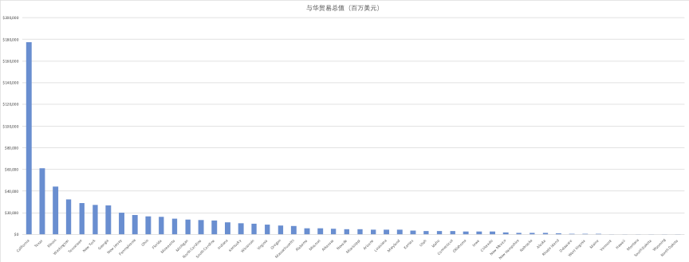
其中对华贸易量排名最高的5个州是：加利福利亚州、得克萨斯州、伊利诺伊州、华盛顿州、得克萨斯州。
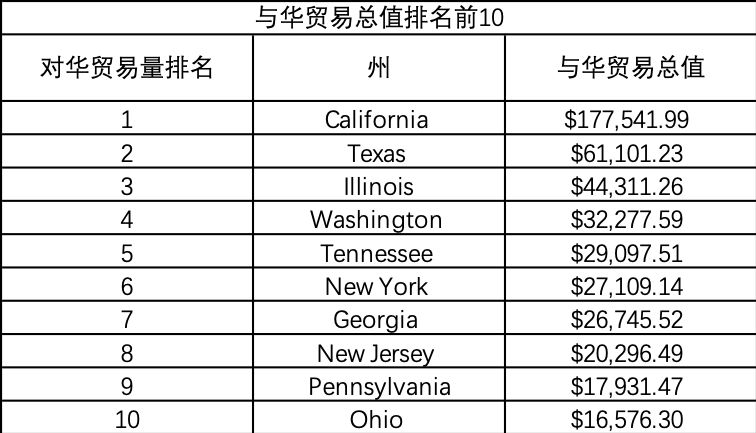
对华贸易量排名最低的5个州是：北达科他州、怀俄明州、南达科他州、蒙大拿州、夏威夷州。
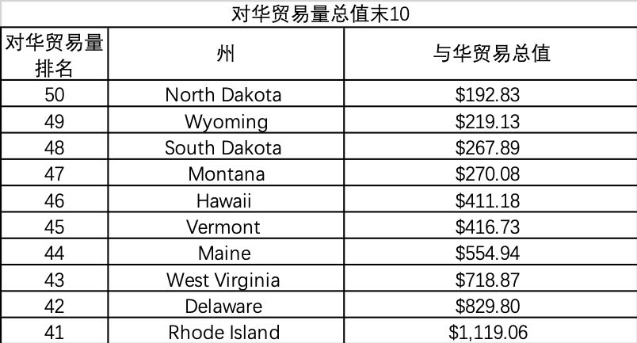
05
各州对华贸易量占比
以对华贸易占州贸易总量比值来看，美国50个州的比值区间从2.45%至58.87%不等，平均占比20.91%，中位数为17.92%。整体而言，美国各州对华贸易量占比差异明显。
值得注意的是，受州经济规模影响，对华贸易占州贸易总量比值最高的十个州里，不仅有加州，伊利诺伊州等经济大州，还有阿拉斯加州等对华贸易量较小的州。
换言之，虽然有些州虽然对华贸易总值不高，但因其经济规模相对小，与华的经济往来对其整体经济还是有一定影响的。
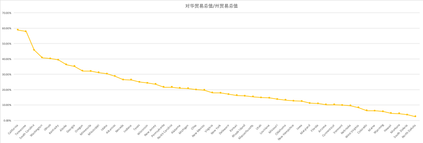
而对于经规模较大的州而言，虽然因其经济结构多样，贸易对整体GDP影响有限，但这并不代表与华经济往来对其无足轻重。
以加州和田纳西州为例，其超过50%的贸易占比，是能够直接影响到州GDP的。尤其是加州，其贸易总量占GDP10.16%，而对华贸易一项就已占了5.98%。
按对华贸易占州种贸易值比值排名，占比最低的10个州为：
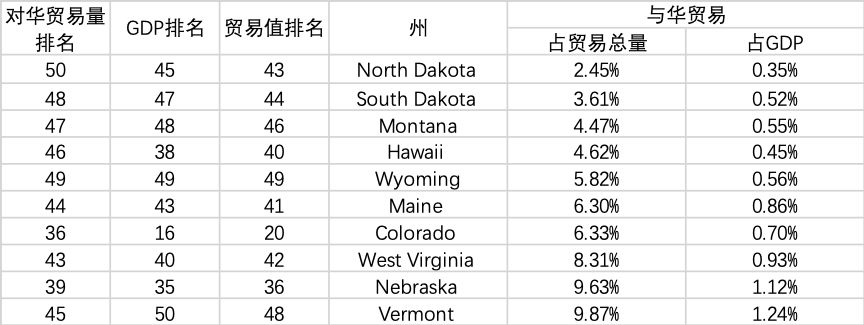
按对华贸易占州种贸易值比值排名，占比最高的10个州为：
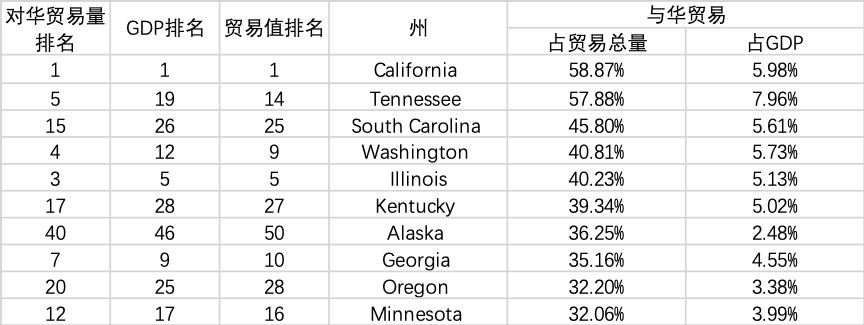
**三、各州州长概况
**
由于美国实行联邦制，因此根据美国宪法，除了联邦政府的权力之外，其余权力均留给各州，如监管州内商业，举行选举，建立地方政府和批准宪法修正案等。因此，美国州长的权力，相对一般国家来说较大。
此外，美国的州长均由民选产生，但任期不一，一些州对州长的任期连任次数设限制，如加州、特拉华州和阿肯色州；一些州则不设限，如纽约州和伊利诺伊州。
01
性别
从性别上看，50位州长中，绝大部分为男性，女性仅有9位。
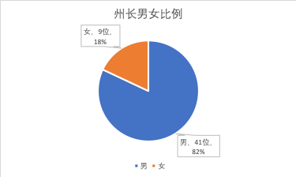
02
年龄
50位州长中，小于50岁的有7位，50岁至60岁的有16位，60岁-70岁的有21位，大于70岁的有6位，平均年龄为60岁，中位数为62岁，由此可见，各州长年龄分布相对集中。综合来看，州长们的年龄大部分在50岁至70岁之间，即出生于1949年至1969年之间。
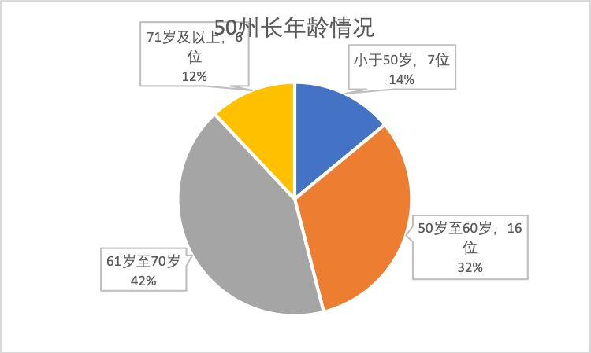
在这段时间，美国登上了资本主义世界的高峰，华尔街在战后享受了历史上最长的一次牛市，股市几乎毫无阻力的从1949年到一直上涨到1957年。政治上，美国开始了其全球扩张的道路，麦卡锡主义大行其道，冷战铁幕开启，对华遏制政策不断。从心理学角度而言，不排除这一时期历史事件对州长对华态度的影响。
03
党派
从党派背景上看，50位州长几乎都是共和党或者民主党人。具体而言，50位州长中，有27位共和党人，22位民主党人，唯一一个例外是明尼苏达州州长，出身于明尼苏达民主- 农民-劳工党。
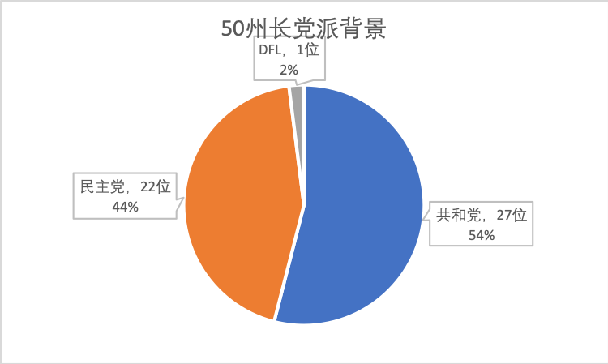
*明尼苏达民主-农民-劳工党（Minnesota Democratic-Farmer-Labor Party, DFL）是美国明尼苏达州的两个主要政党之一，隶属于美国民主党，可视为民主党在明尼苏达州的州政党。1944年由明尼苏达民主党（即美国民主党在明尼苏达州的分支）与明尼苏达农民-劳工党合并而成。由第38任美国副总统休伯特·汉弗莱主导合并。
04
过往经历
50位州长中有13位曾经是副州长，14位有过参议员经历，17位众议员出身。另外，还有15位州长在州或县级办公室担任过主管，更有包含前美国国务卿、前美国大使在内的前联邦级部门主管5人。
换言之，在50位州长中，有三分之一曾是国会议员，有41%曾主管过州务。这些人或熟悉选民心态，或有丰富的一线管理经验。
政府公职之外，还有8位州长有过律师从业经历、有2位州长曾是所在州的共和党党魁。此外，还有7位州长在任州长之前无任何公共事务经验。
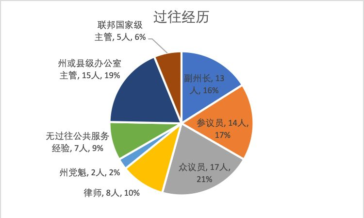
需要特别说明的是，虽然律师属司法系统，但美国人将其划分在了公共事务职业里，也因此在官方的消息中，只有律师这一职业被单独列出统计。
05
任期时间
50州州长任期各不相同，任期起始时间跨度从2009年8月至2019年1月，主要集中于2015年1月，2017年1月，以及2019年1月。具体信息如下：
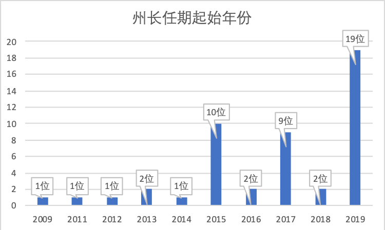
50位州长的任期结束时间跨度从2019年到2023年，具体任期换届统计信息如下：
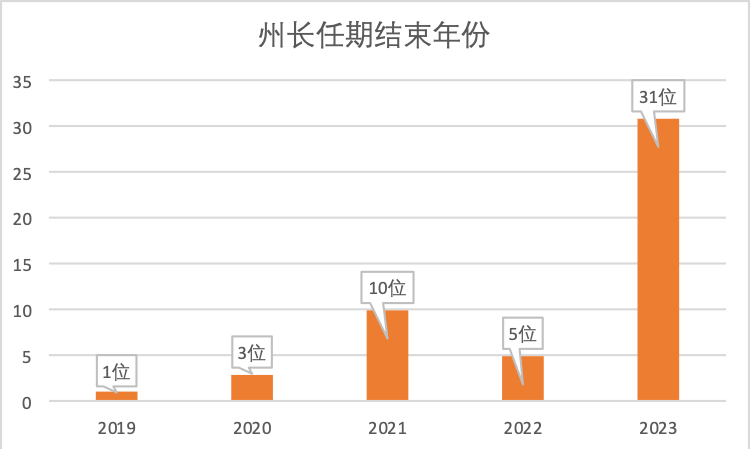
其中，肯塔基州长共和党人Matt Bevin将于今年结束本届任期，目前他已经展开连任竞选活动。
而将在2020年迎来换届的3位州长分别是：路易斯安州长民主党人John Bel Edwards、北达科他州长共和党人Doug Burgum、及密西西比州州长共和党人Phil Bryant。
密西西比州州长已达到了任期限制，而路易斯安州长John Bel Edwards、北达科他州长Doug Burgum则都还在第一届任期内，目前路易斯安州长John Bel Edwards已宣布参与连任竞选，但尚无消息确认北达科他州长Doug Burgum是否参与竞选。
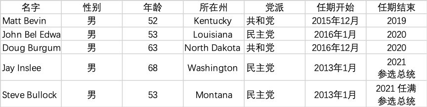
另外，还有2位将于2021年迎来换届的州长选择了参与2020年总统大选，分别是华盛顿州长民主党人Jay Inslee，以及蒙大拿州长民主党人Steve Bullock。
值得注意的是，这五个州中除华盛顿州，其余4个州在过去5次总统选举中。并且，除了2008年麦凯恩以低于5%的得票率拿下蒙大拿州以外，共和党候选人的得票率都超过了5%。
因此，身为民主党人的现任路易斯安州长John Bel Edwards势必将迎来激烈的竞争，尤其是在路易斯安州第5选区的共和党众议员Ralph Abraham。
除此之外，还有包括密西西比州州长Phil Bryant在内的11位州长将达到州长任期限制，虽然目前尚无消息表明这些州长之退任之后会何去何从，但这11位州长的公开言行势必会受其后续打算的影响。具体名单如下：
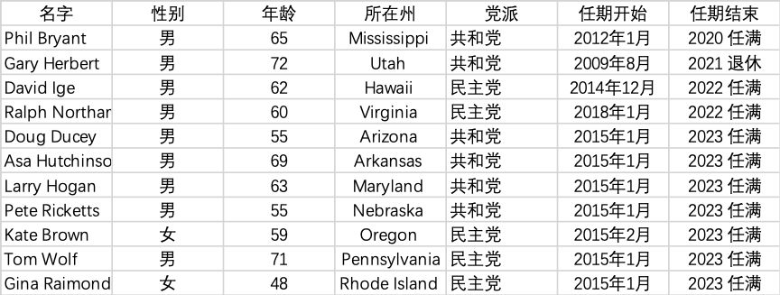
**四、州长对华态度
**
01
各州州长对华态度一览
基于以上关于州长、州经济、以及各自对华态度的基本分析，我们以对华态度友好、强硬、模糊为标准，进一步分析对华态度背后的经济等相关影响因素。
友好的评判标准为是否有公开发表过亲华言论；如果没有明显对华言论，但就对华增加关税、发动贸易战等明显针对中国的事件表明过不满的，我们将其归纳为模糊；如果就有过明显反华言论，批判言论，或者明确支持贸易战言论的，我们将之归为强硬。
例如，马塞诸塞州长Charlie Baker在2018年12月在一场活动上曾表示：“The U.S. should see China as a valued partner not only in our economic growth but in solving problems around the world”，因此我们将其视为对华友好。
阿肯色州长Asa Hutchinson在2019年6月9日接受CNBC采访时表示：“I continue to support the president …… But we feel it’s appropriate to say there is a point that you should not squeeze us further”，因此我们将其归为对华态度模糊。
而公开说过“he supports whatever decision the president makes on delicate trade negotiations”的乔治亚州长Brian Kemp则被归为态度强硬。
在统计了50个州长的对华态度后，我们发现州长们对华整体态度偏向友好。其中有17位州长对华表现出明显的友好，有14位州长对华态度模糊，有6位州长对华态度强硬，另有14位州长未有明显的、公开的对华表态。
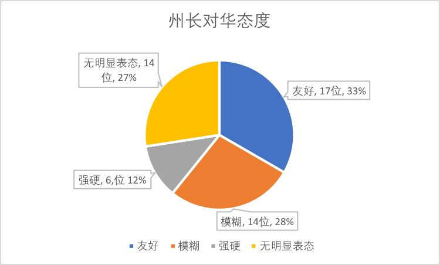
友好
17位对华表现出明显友好态度的州长名单如下，其表态议题集中于反对特朗普开展对华贸易战，及多次参与华人社区活动或者到访中国。
这17位州长中，女性州长3人，男性州长14人，年龄从44岁到75岁不等，有6位民主党人，11位共和党人。
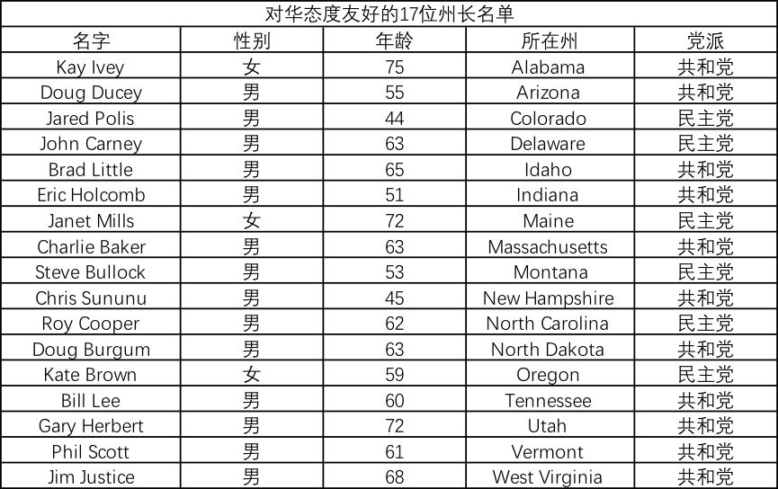
强硬
6位对华明显表态强硬的州长名单如下，其中有4人与特朗普私交甚密，有3人就人权问题指责中国。党派而言，有5位出自共和党，1位民主党人。年龄从41岁到70岁不等，性别而言，皆为男性。
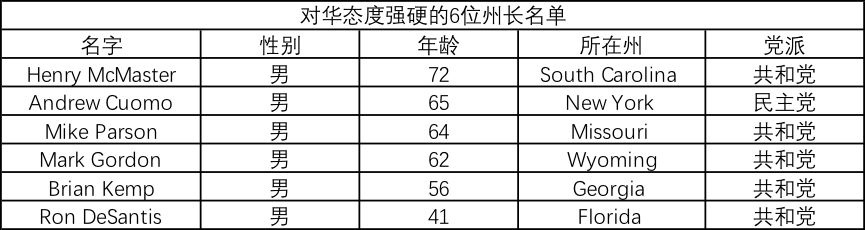
模糊
对华态度呈模糊的14位州长名单如下，其中有3位女性，11位男性，6位民主党人，8位共和党人，年龄从48岁到72岁不等。大多数人担忧关税伤害本州经济，但对于贸易战的态度模糊不清，更有部分州长坚定支持特朗普，或认为中国在知识产权上确实存在问题。
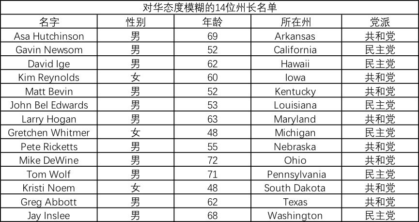
02
对华贸易与州长对华态度
友好
以州划分，对华态度友好的17位州长，所在州GDP、贸易总值、以及对华贸易总值排名集中于中等及末等。但若以贸易值占GDP排名来看，则大多集中于中等。
地理位置而言，所在州集中于美国新英格兰地区、中南部、以及美国山地地区。
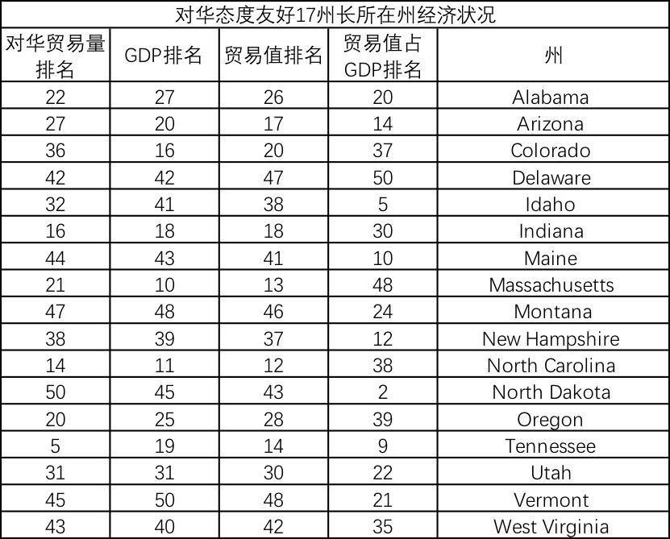
强硬
对华态度强硬的6位州长，其所在州GDP、贸易总值、及对华贸易总值排名大体上靠前。地理而言，除纽约州和怀俄明州以外，其他4州皆位于美国东南部。
但值得注意的是，怀俄明州及纽约州的贸易量占GDP的比值都属50州末等。
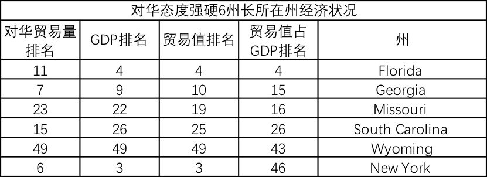
模糊
对华态度模糊的14位州长，其所在州GDP、贸易总值、及对华贸易总值排名四散，暂无集中规律可循。地理位置上也无集中。
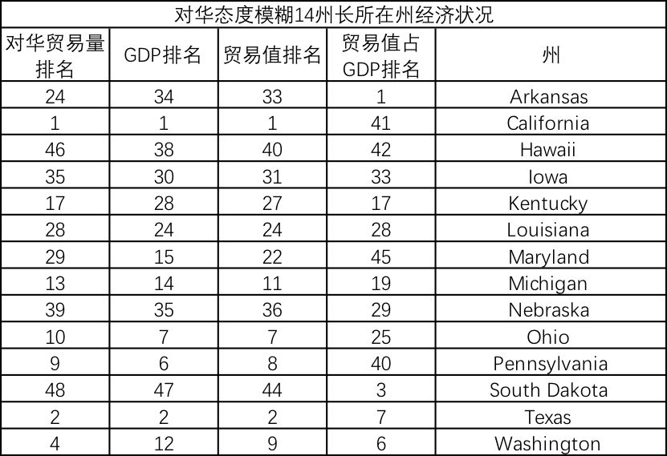
03
对华进出口与州长对华态度
如果将对华贸易进一步拆分为对华出口和从华进口，各态度分类下，州长所在州对华出口和从华进口数据分布没有特别明显的规律可循。
目前观测到的是，州长对华态度友好的州，其对华出口及从华出口与州长的对华态度之间并没有直接的相关性，但是并不排除三者之间有虚变量（dummy variable）的可能。
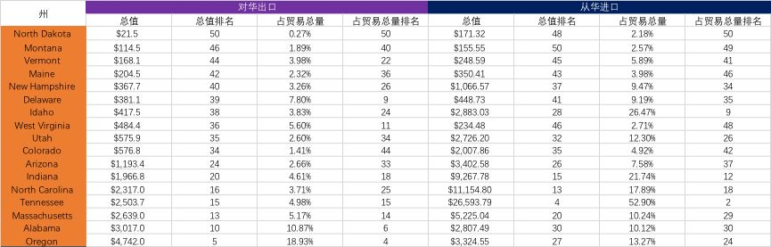
州长对华态度强硬的州，其对华出口及从华出口总值，除怀俄明州以外，皆处于50州前列，但数据本身数量过小，不足以支撑规律。
州长对华态度模糊的州，其对华出口总值或处于50州前端，或处于末端，呈两极分化。
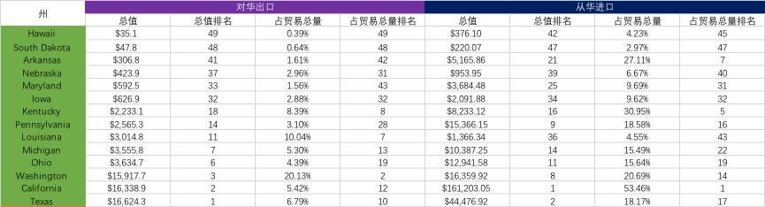
04
任期时间与对华态度
综合数据而言，州长的过往经历与其对华态度无关联性。然而，从任期来看，有竞选压力的州长，或明确对华表示友好，或者曾公开批判过贸易战。
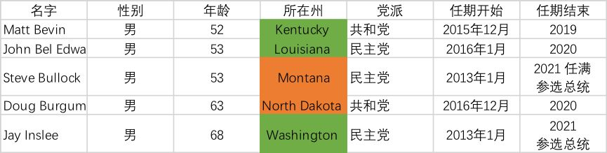
（友好；模糊）
而11位即将任满的州长中，态度模糊或不表态的占大多数，另有3位州长明确对华表示友好。
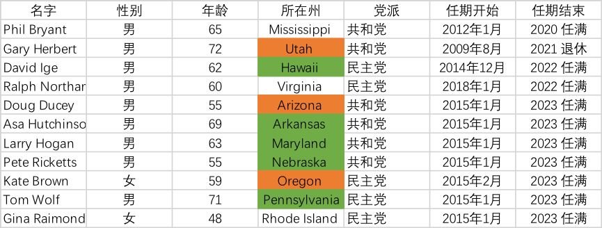
值得一提的是，面临选举压力和退休压力的16位州长，无人对华态度强硬。
结语
当前，中美贸易摩擦升级且趋于常态化，中美关系面临巨大下行压力。虽然美国对华态度日趋强硬，但针对美国各方如何看待中国、希望形成怎样的中美关系以及计划如何建设中美关系等方面的研究较少。
但在中美关系加速转型的当下，这种不确定性可能给中美关系带来致命的伤害。因此，了解美国各界，包括政府、各州、利益集团、主流智库的对华态度至关重要。
为探讨这一问题，民智国际研究院同清华大学全球化研究中心启动了“美国对华态度全景”研究，此篇为系列报告的第一篇——州长篇。接下来，我们还将陆续推出包括美国白宫内阁成员在内的其他报告，敬请期待。
版权声明：除美国地图以外，所有图表皆为民智所有
研究团队：康雅琦、刘畅、杨晶滢、马雨欣、杜心蕾
更多阅读
【重磅速递】约瑟夫·奈：美国霸权的兴衰：从威尔逊到特朗普 | 国政学人
【重磅推荐】巴里·布赞：英国学派视角下的中国崛起 | 国政学人
【重磅速递】米尔斯海默：注定失败：自由主义国际秩序的兴衰 | 国政学人
【国际组织】IO杂志：联合国维和行动的武力运用问题研究 | 国政学人
【国际秩序】为什么自由主义国际秩序理念将美国外交政策引入歧途？| 国政学人
【关系理论】“关系”：世界政治关系理论的中国话语 | 国政学人
【百年国关】历史在国际社会中的应用：从巴黎和会到现在 | 国政学人
【英国学派】张勇进：中国与全球国际社会中的自由主义等级制：实力与对规范变迁的协商 | 国政学人
【地区秩序】论经济实力的可转化性：中国经济崛起与东亚安全秩序 | 国政学人
【中俄关系】不得已的伙伴：系统-单元动态与中俄关系 | 国政学人
【IPE研究】美国对外贸易政策的“1934年体制”是如何形成的？ | 国政学人
【现实主义】斯蒂芬·沃尔特：傲慢的终结与美国克制的新时代 | 国政学人
【理论批判】系统、层次与结构理论：沃尔兹的理论并非系统理论 | 国政学人
【外交政策】单极体系下的不和平状态与美国外交政策 | 国政学人
【欧洲研究】资本主义多样性与合规：加入欧盟后中东欧的经济改革 | 国政学人